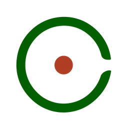

ระบบช่วยคัดกรองเบาหวานขึ้นจอตา และเตรียมชุดข้อมูลวิจัย
โดยแพทย์เป็นผู้ตัดสินผลสุดท้ายเสมอ
5 roles ทุกคนอ่านข้อมูลได้ แต่ server จะปฏิเสธการเขียนที่ role นั้นไม่มีสิทธิ์ และบันทึกว่าใครทำอะไร
เก็บ geometry ทุกอย่างเป็น pixel ของภาพต้นฉบับ ภาพ TIFF, DICOM และ UWF ที่ mask แล้วจึงมี SHA ต่างจากต้นฉบับ แต่กรอบยังอยู่ตรงตำแหน่งเดิม
ผล AI ที่มาทีหลังไม่ล้างเกรดที่แพทย์ยืนยันแล้ว และผล AI ดิบไม่ถูกแก้
ผลว่างของ AI หรือของคน หมายถึง "ตรวจแล้ว" เท่านั้น
ไม่แสดงเป็นความน่าจะเป็นทางคลินิก และไม่มีเกณฑ์ตัด low confidence
Refer / Not refer เป็นการตัดสินของผู้ให้เกรด กฎเดียวที่มีคือ grade 4 จากเกรดที่แพทย์ยืนยัน
ไม่ย้าย ไม่เปลี่ยนชื่อ ไม่แก้ ไม่ลบ ทุก export เป็นสำเนา
ภาพที่ให้เกรดไม่ได้ จะไม่ถูกรายงานหรือจัดเป็นปกติ
ระบบเช็ก AI server choice และ consent ก่อนส่ง งานจริงใช้ hospital package
ไม่มี token, ข้อมูลผู้ป่วย, weights หรือ database ใน Git, log, chat หรือ browser
เดโมสดจากเครื่องของเจ้าของโครงการ ใช้สำหรับพัฒนา เดโม และกรณีฉุกเฉิน